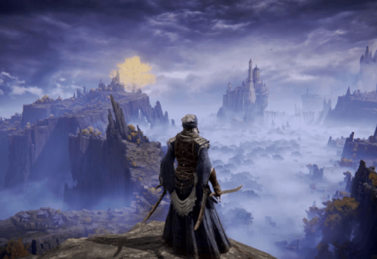

História Completa de Elden Ring
Capitulo 2: O Caminho do Tarnished
O protagonista, conhecido como Tarnished, é um ser banido do mundo das Eras Anteriores. Após a destruição do Elden Ring, os Tarnished perderam seu direito de habitar o mundo dos vivos e foram esquecidos. No entanto, uma misteriosa voz, a de uma figura chamada "Fingers", os chama de volta para a Terra das Nove.
O Tarnished, marcado por uma vontade de recuperar a sua honra e restaurar o Elden Ring, segue uma jornada onde deve se enfrentar com os vários heróis caídos, deuses e demônios corrompidos que buscam os fragmentos do Elden Ring para tomar o controle absoluto do mundo. Cada um desses seres tem sua própria ambição e um papel a desempenhar na teia de intrigas, sendo a maior parte dos inimigos do Tarnished poderosos sem-deuses que governam locais profundos e traiçoeiros do reino.
Ao longo da jornada, o Tarnished encontra aliados, como o misterioso guerreiro Radahn e a feiticeira Rennala, cada um com suas próprias histórias e passagens pela perda do Elden Ring. Enquanto busca pelos fragmentos, o Tarnished é também desafiado por criaturas que representam tanto o poder do Elden Ring quanto os erros de um mundo decaído, que clama por um novo governante.
